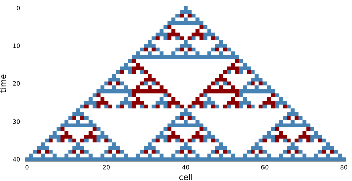
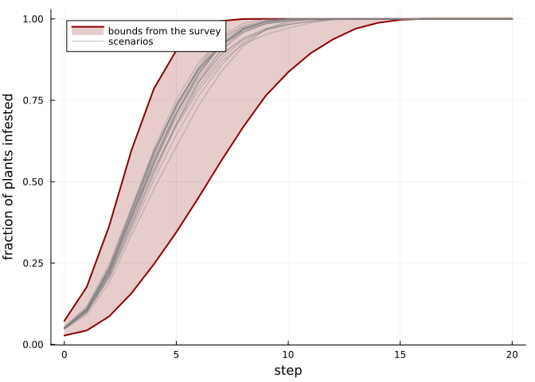

Linear and monotone cellular automata
Simon Frost
- Overview
- Linear cellular automata
- Composition is multiplication
- Other primes
- Running backwards
- Monotone cellular automata
- Bounding an uncertain survey
Overview
The constructions of the previous vignettes work for alphabets in any category with products, not only for finite sets (Castillo-Ramirez et al. 2026). Two choices of category give automata with extra structure that can be put to use:
- In the category of vector spaces over a finite field, the cellular automata are the linear ones. They compose by multiplying coefficients, so long composites are cheap, and whether one can be run backwards is a question of linear algebra.
- In the category of partially ordered sets, they are the monotone ones. They preserve order, so two runs bound every run started between them.
ENV["GKSwstype"] = "100"
using CategoricalCellularAutomata
using CellularAutomataCore: CellularAutomataCore, LocalRule, Moore, Life, Torus, CAProblem,
solve
using Plots
using Random
using StatisticsLinear cellular automata
Over the field GF(p) of integers modulo a prime p, a linear cellular automaton adds up its neighbours with fixed coefficients: τ(x)(g) = Σ_s a_s x(s g) mod p. Elementary rules 90 and 150 are linear over GF(2), with coefficients one on the two neighbours, or on the two neighbours and the cell itself:
Z = CyclicGroup(64)
rule90 = LinearCA(Z, [63 => 1, 1 => 1]; p=2)
rule150 = LinearCA(Z, [63 => 1, 0 => 1, 1 => 1]; p=2)LinearCA over CyclicGroup(64) mod 2: 1·x(s=0) + 1·x(s=1) + 1·x(s=63)They are cellular automata in the general sense too, and agree with the rules written with exclusive or:
B = FinAlphabet(0:1)
CellularAutomaton(rule90) == CellularAutomaton(Z, [63, 1], p -> xor(p...); dom=B)trueComposition is multiplication
A linear automaton is a polynomial in the shifts, and composing two of them multiplies their polynomials. Squaring rule 90 doubles the distance to its neighbours, because the cross terms cancel modulo 2. So rule 90 applied 2^k times reads only the two cells at distance 2^k:
[k => sort(collect(keys(coefficients(rule90^(2^k))))) for k in 1:4]4-element Vector{Pair{Int64, Vector{Int64}}}:
1 => [2, 62]
2 => [4, 60]
3 => [8, 56]
4 => [16, 48]Powers are computed by repeated squaring, so even a thousand steps cost a few multiplications. On a ring of 4096 cells, rule 90 applied 1000 times reads 2^6 = 64 cells, one for each way of choosing a subset of the six ones in the binary digits of 1000, as Lucas’s theorem predicts:
big = LinearCA(CyclicGroup(4096), [4095 => 1, 1 => 1]; p=2)
(length(coefficients(big^1000)), 2^count_ones(1000))(64, 64)The general composition of local rules cannot do this: its composite local rule calls the original once for every path through the memory sets, a number that doubles with every application. Composing the general rule 90 with itself ten times and evaluating it on one configuration:
x = Configuration(Z, rand(Xoshiro(1), 0:1, 64))
general90 = CellularAutomaton(rule90)
(general90^10)(x);
(rule90^10)(x);
linear_time = @elapsed (rule90^10)(x)
general_time = @elapsed (general90^10)(x)
(same=(rule90^10)(x) == (general90^10)(x), slower_by=round(Int, general_time / linear_time))(same = true, slower_by = 904)The two give the same configuration, and the general composite is hundreds of times slower already at ten steps.
Other primes
Over GF(3) the cells take three values. The rule that adds a cell to its two neighbours modulo 3 draws a different fractal from a single seed:
Z3 = CyclicGroup(81)
sum3 = LinearCA(Z3, [80 => 1, 0 => 1, 1 => 1]; p=3)
seed = Configuration(Z3, [g == 40 ? 1 : 0 for g in 0:80])
rows = [parent(seed)]
for _ in 1:40
push!(rows, parent(sum3(Configuration(Z3, rows[end]))))
end
heatmap(0:80, 0:40, permutedims(reduce(hcat, rows)); c=[:white, :steelblue, :darkred],
yflip=true, colorbar=false, xlabel="cell", ylabel="time", size=(700, 360))
Running backwards
A linear automaton is a bijection of configurations exactly when its matrix is invertible over GF(p), and then its inverse is linear too. Rule 90 is never invertible on a ring, since the configuration of all ones and the configuration of all zeros both go to all zeros. Rule 150 is invertible on a ring of n cells exactly when 3 does not divide n. These are the ring sizes from 3 to 12 on which it is invertible:
rule150_on(n) = LinearCA(CyclicGroup(n), [n - 1 => 1, 0 => 1, 1 => 1]; p=2)
filter(n -> isinvertible(rule150_on(n)), 3:12)'1×6 adjoint(::Vector{Int64}) with eltype Int64:
4 5 7 8 10 11On a ring of 10 cells, the inverse undoes thirty steps:
L = rule150_on(10)
back = inv(L)
x0 = Configuration(CyclicGroup(10), rand(Xoshiro(2), 0:1, 10))
(back^30)((L^30)(x0)) == x0trueMonotone cellular automata
When the states are ordered, a monotone rule is one where raising the state of any cell it reads never lowers its result. Then a configuration that is everywhere at least as high as another stays so under the automaton, step after step. A pest that spreads to a plant with at least two infested neighbours among its eight, and never leaves, is monotone; Life is not, since a crowded cell dies:
spread = LocalRule(Moore(1)) do cell, nbrs, ctx
return cell == 1 || count(==(1), nbrs) >= 2 ? Int8(1) : Int8(0)
end
B8 = FinAlphabet(Int8[0, 1])
(spread=is_monotone(CellularAutomaton(spread, Torus(60, 60); alphabet=B8)),
life=is_monotone(CellularAutomaton(Life(), Torus(60, 60); alphabet=B8)))(spread = true, life = false)Bounding an uncertain survey
A survey of a 60 × 60 field confirms some infested plants and flags others as possibly infested. The true state lies between the confirmed map and the confirmed-or-flagged map. Because the spread rule is monotone, running those two maps gives a lower and an upper bound on every scenario in between, at every step, without running the scenarios:
rng = Xoshiro(3)
confirmed = Int8.(rand(rng, 60, 60) .< 0.03)
flagged = Int8.((rand(rng, 60, 60) .< 0.05) .& (confirmed .== 0))
lower = solve(CAProblem(spread, confirmed, 20))
upper = solve(CAProblem(spread, confirmed .+ flagged, 20))
scenarios = map(1:20) do _
truth = confirmed .+ Int8.(flagged .& (rand(rng, 60, 60) .< 0.5))
return solve(CAProblem(spread, truth, 20))
end
all(all(lower.u[t] .<= s.u[t] .<= upper.u[t]) for s in scenarios, t in eachindex(lower.u))trueinfested(sol) = [mean(u) for u in sol.u]
plot(lower.t, infested(lower); fillrange=infested(upper), fillalpha=0.2, lw=2,
label="bounds from the survey", c=:darkred, xlabel="step",
ylabel="fraction of plants infested", legend=:topleft)
plot!(upper.t, infested(upper); lw=2, label=nothing, c=:darkred)
for (k, s) in enumerate(scenarios)
plot!(s.t, infested(s); c=:grey, alpha=0.5, label=k == 1 ? "scenarios" : nothing)
end
current()
The bounds hold for the whole map, cell by cell, not only for the fraction infested. Life gives no such guarantee: among random pairs of configurations on a 6 × 6 torus, one everywhere at least as high as the other, almost every pair has images that are not ordered:
life = CellularAutomaton(Life(), Torus(6, 6); alphabet=B8)
T6 = TorusGroup(6, 6)
pairs = map(1:200) do _
a = Int8.(rand(rng, 6, 6) .< 0.3)
b = max.(a, Int8.(rand(rng, 6, 6) .< 0.2))
return Configuration(T6, a), Configuration(T6, b)
end
count(((a, b),) -> !all(parent(life(a)) .<= parent(life(b))), pairs)195Castillo-Ramirez, Alonso, Alejandro Vazquez-Aceves, and Angel Zaldivar-Corichi. 2026. A Categorical Framework for Cellular Automata. https://arxiv.org/abs/2602.04049.